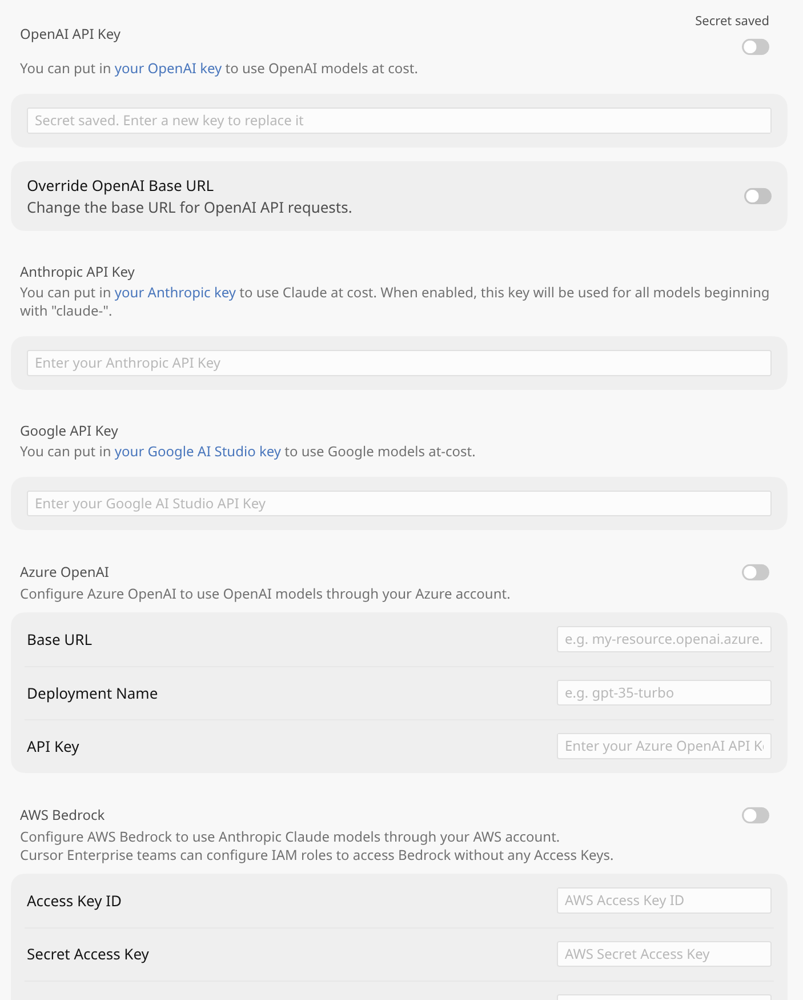

AI-powered development:
подходы к AI-инструментам
подходы · локальный AI · процессы · холивар
Общие подходы к AI-powered development
Ask → Plan → Build
Источник: Claude Code best practices
Plan mode: чтение кода, ответы на вопросы, без правок.
Файлы, flow, edge cases. План можно править до старта.
Реализация по плану + проверка pass / fail.
План нужен
Неясный подход · много файлов · незнакомый код
Сразу Build
Diff в одно предложение: typo, log, rename
Закрой loop
Ask-Plan-Build без verify = квадратные колёса.
Контекст решает!
Контекст = переписка + прочитанные файлы + вывод команд.
Rich: @file · скрины · URL доки · «сам сходи и прочитай»
Постоянный контекст (rules / CLAUDE.md / skills)
Едем на квадратных колёсах
Можно ехать — но колёса ещё квадратные.
открыть пример в Gemini →Инструменты — всему голова
Skills = детерминированный слой поверх LLM: API и конвенции заданы явно.
~/.cursor/skills/ ├── kaiten-card/ │ ├── SKILL.md │ └── scripts/kaiten-card.py ├── bitbucket-pr/ │ ├── SKILL.md │ └── scripts/bitbucket-pr.py ├── git-branch-naming/ │ └── SKILL.md ├── git-commit-instructions/ │ └── SKILL.md └── review-branch-diff/ └── SKILL.md
--- name: kaiten-card description: >- Fetches Kaiten card/task details via REST API: title, description, type, state, owner, checklists… --- # Kaiten card details ## When to use - User pastes a kaiten.ru card link or numeric card id - Need ticket description before implementing / PR - Pair with git-branch-naming and git-commit-instructions
--- name: bitbucket-pr description: >- Fetches Bitbucket Cloud PR details: branches, comments, diff, diffstat, commits, file contents… --- # Bitbucket pull request details ## When to use - User pastes a bitbucket.org pull request link or PR id - Need PR title, description, branches, review comments, or the code diff - Pair with review-branch-diff, git-commit-instructions, kaiten-card
--- name: git-branch-naming description: >- Names and creates git branches using a fixed pattern. Asks for branch type and card ID when missing. --- ## Format {type}/{card-id}-{short-description-kebab-case} ## Required inputs 1. Branch type — feature | fix | task | hotfix 2. Card ID — numeric tracker id (do not guess)
--- name: git-commit-instructions description: >- Commit splits and messages: feat/fix/test separation, English conventional prefixes, no trailers. --- ## Commit messages - Language: English - Prefixes: feat: · fix: · test: · refact: - Prefer separate commits for product vs tests - WARNING if branch is main / master / dev
--- name: review-branch-diff description: >- Reviews current branch vs origin/main (or PR destination) with a senior-engineer mindset. Focus on risks and edge cases. --- ## Output format ### Critical ### Suggestions ### Nice to have If nothing material is wrong → "It's OK."
Два пути workflow
Путь разработки
Путь ревью
Локально
review-branch-diff
Удалённо
--diffstat → --diff / --compare
Типовые грабли, на которые я наступил
- 01Много избыточного текста с плохой структурой
- 02Некритичное восприятие
- 03Неочевидные связи с другими частями проекта
- 04«Приблизиться к оленю» (запусти и проверь)
- 05Перекос в сторону «ещё одного улучшения»
Локальный AI — is real?
Cursor

1. API Key
Любая non-empty строка для local
2. Override Base URL
http://localhost:11434/v1
3. Model picker
Имя локальной модели
На скрине рядом: Anthropic / Google / Azure / Bedrock
Claude Code · Codex · OpenCode
Плагины к IDE
Скорость инференса и объём контекста
Know-how у проприетарщиков
Системные промпты и дефолтный набор инструментов формируют заметную разницу в качестве.
Как обеспечить наблюдаемость в карточке?
something better than nothing
Минимальный стандарт прозрачности в карточке полезнее, чем отсутствие структуры.
Минимальный шаблон
Контекст → План → Изменения → Проверка → Риски
Частота обновлений
После каждого завершённого шага и перед сменой направления.
забери свой нейрослоп!
Текст от модели превращается в рабочий материал только после фильтрации и верификации.
Факт · источник · проверка · влияние на продукт.
Холивар
затраты на «держать лицо»
Попытка скрыть неопределённость обычно дороже, чем ранняя фиксация риска.
Проблема обнаруживается поздно, когда стоимость изменения выше.
Риск фиксируется сразу: гипотеза, план проверки и срок решения.
инженер — не кодер
Ценность создаётся не количеством строк, а устойчивостью решения и скоростью обратной связи.
Операционный критерий
Решение считается готовым, если его можно поддерживать без автора через месяц.
AI-first лемминги
AI-first работает как стратегия только при явных границах применения.
Быстрые прототипы, рутинные миграции, генерация тестовых заготовок.
Критичные доменные правила, безопасность, платежные и правовые сценарии.